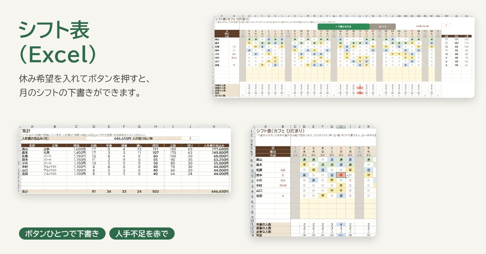
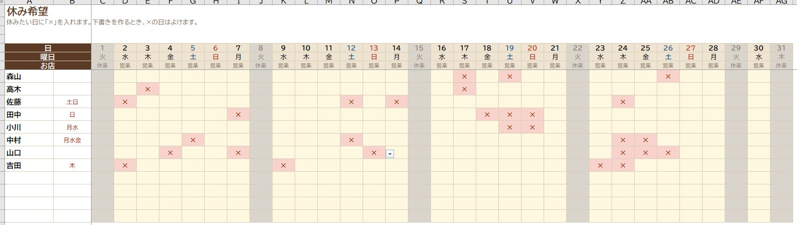
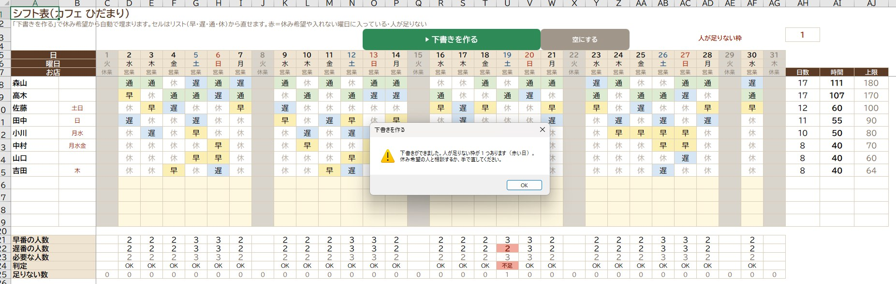
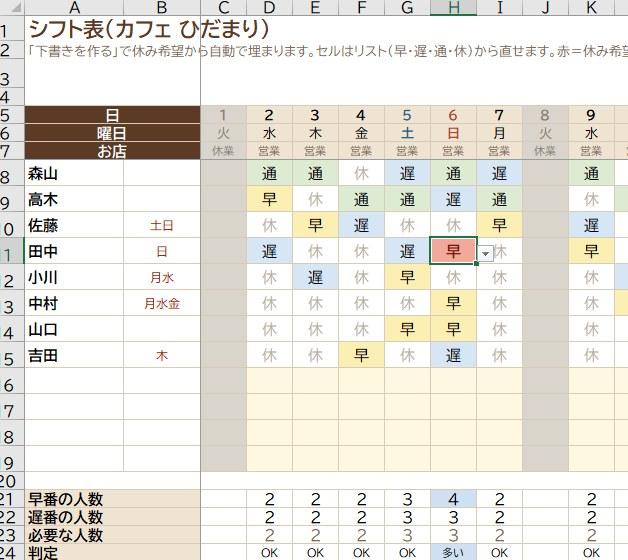
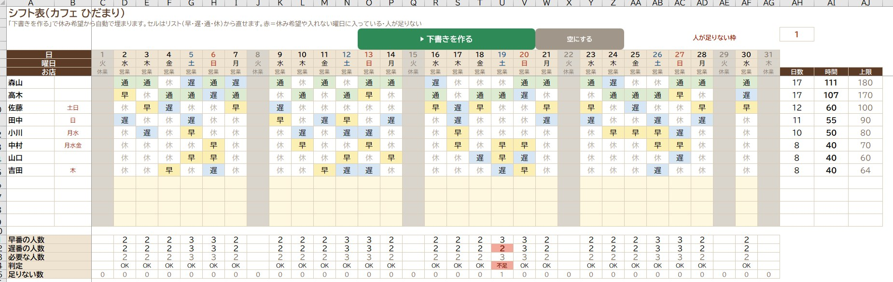
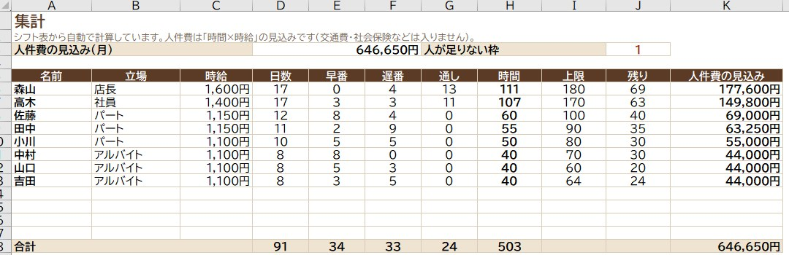
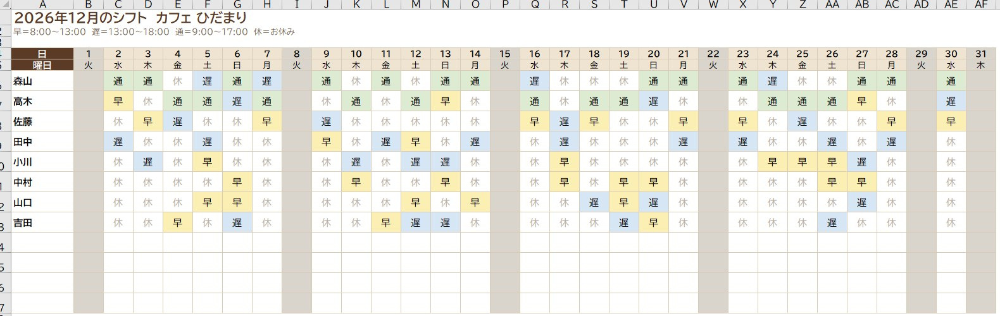
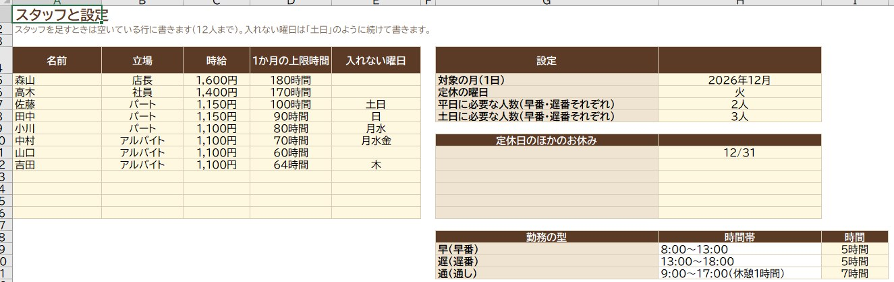

← 制作実績一覧へ戻る
見本ファイルつき
シフト表（Excelマクロ・休み希望から下書き）
休み希望を見ながら手作りしていた毎月のシフトを、ボタンひとつで下書きできるExcelです。休み希望や入れない曜日をよけ、必要な人数を満たすように埋めます。人が足りない日や見落としは赤で知らせ、勤務時間と人件費の見込みも自動で集計します。

想定した依頼
「毎月のシフトを、スタッフの休み希望を見ながら手で作っていて、半日かかる。人が足りない日や、働きすぎの人にも気づきにくい。希望を入れたら下書きができて、人数や勤務時間を自動でチェックできる表がほしい」。飲食店や小売店からのご相談を想定して作りました。
作ったもの
架空のお店「カフェ ひだまり」の、スタッフ8人・12月のシフト表です。使い方は「休み希望を入れる → ボタンを押す → 手で直す」の3つだけです。
- 休み希望：休みたい日に「×」を入れるだけ
- シフト表：「下書きを作る」で、休み希望・入れない曜日・上限時間をよけて、必要な人数を自動で埋める
- 自動チェック：休み希望の日や入れない曜日に入れると赤、人が足りない日も赤
- 集計・印刷用：一人ずつの日数・時間・人件費の見込みと、お店に貼るA4横1枚の表


手で直すとき
セルを選ぶと「早・遅・通・休」のリストが出ます。入れてはいけない日に入れると、その場で赤くなります。


集計と印刷用



工夫した点
- 下書きは決まりがはっきり：まず店長・社員を通しに入れ、残りは「上限に対する勤務時間の割合」が少ない人から入れます。休み希望・入れない曜日・上限時間・5日連続をよけるので、かたよりのない下書きになります。
- 最後は人が決める：下書きのあとは、リストから選んで手で直せます。まちがった入れ方をすると赤で知らせます。
- マクロはボタンだけ：チェックや集計は関数なので、下書きのあとはGoogleスプレッドシートで共有することもできます。
- 正しさを確かめた：下書きの結果と人数・時間・人件費を、別に作った答えと615か所すべて照らし合わせ、一致することを確かめました。
規模と制作時間
- シート6枚（シフト表・休み希望・スタッフ・集計・印刷用・使い方）、マクロ1つ（下書きを作る）
- 制作：表とマクロの作成、正しさの確認まで 約1時間（AIと一緒に作成）
こんなご依頼にも対応できます
- 毎月のシフト作りや、勤務時間・人件費の計算をExcelで楽にしたい
- お店や教室のルール（必要な人数・勤務の型・定休日）に合わせた表を作りたい
- 今使っている手書きやExcelの表を、ミスに気づける形にしたい
注意
お店の名前・スタッフ・時給・休み希望はすべて架空の見本です。人件費は「時間×時給」の見込みで、交通費や社会保険などは入りません。マクロはWindows版のExcelで動作を確認しています。